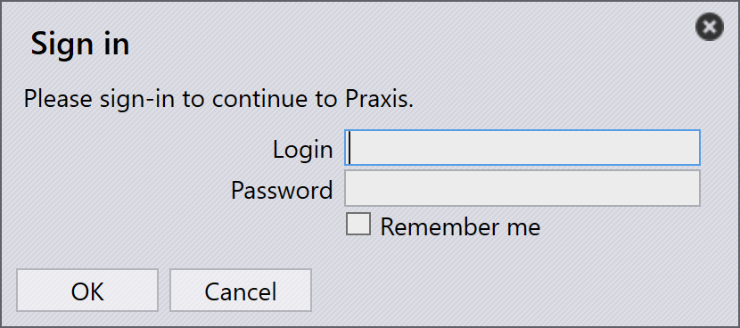

Server installation
Follow the instructions to install TruSmartCAM Server installation along with SQL.
|
Administrator Rights
To execute this installation, user must have administrative privileges. |
-
Execute Setup.TruSmartCAM.<version>.exe to begin the installation.
| Version is a number. |
-
Read the license agreement and choose I accept the agreement and then Click Next .

Step 1 : Install Location
-
Mention the installation directory or accept the installation default
C:\Program Files\Metamation\Praxisand click Next.-
C:\Program Files\Metamation\Praxis- Install folder will have following folders : Bin, MetaCAM, Samples and Tracker. -
C:\Program Data\Metamation- Data Folder will have following folders : TruSmartCAM, TecZone and MetaCAM.
-

Step 2 : Components Selection
| Installation Type | Components |
|---|---|
Full |
Server + Desktop client + Engine |
Client |
Desktop Client |
Server |
Server + Desktop client |
Station |
Picks all Stations Terminal like TecZone, MetaCAM, RightAngle(Bend Controller), Vulcan(Laser Machine Controller) |
Custom |
Picks by user choice. |
-
Choose Full Installation. Pick Code Senders and Bend Code Senders from TruSmartCAM Tools. Now the Installation type changes to Custom. Click Next.

Step 3 : Choose Install SQL Server
|
SQL Express 2022 installation is needed only for the TruSmartCAM Server. This option is not available for Client and Sync Installations. Also this is Checked ON and installed for the first time and can be ignored thereafter. If already SQL installed in TruSmartCAM server, user can ignore Step 3. |
-
In Select Additional Tasks : Click Install SQL Express and Click Next.
-
In Ready to Install : Summarize all install features and Click Install.

Step 4 : SQL Server Installation
Once TruSmartCAM components are installed, the installer proceeds with the SQL server installation. Accept the License Agreement to proceed and install SQL express with the default options.

Once the installation is completed Click Close and complete the installation.

| Depending on the Windows version, closing the SQL installation may prompt a restart. |
Step 5 : Windows Desktop shortcuts
-
After SQL install, if System not restarts, then select the Launch TruSmartCAM checkbox and Click Finish.
-
If System restarts, then Launch TruSmartCAM shortcut icon in Desktop or type TruSmartCAM in Windows Start Program and Run as administrator.
| Server installation : TruSmartCAM and TruSmartCAM License Shortcut icons are available in Desktop. + Client/SYNC Installation : Only TruSmartCAM shortcut icon available in Desktop. |

Step 6 : License Registration
-
In Serial Number field, type the TruSmartCAM Serial key provided by Trumpf Metamation Service Team. Type <Company Name> in "Registered to" field and E-Mail. Click OK.

|
In case of Network firewall blocks the license registration or No internet in the TruSmartCAM Server PC, then TruSmartCAM license is done by Offline activation. Email the Prax.request from C:\ProgramData\Metamation\Praxis Folder to Trumpf Metamation Service Team. Trumpf Metamation Team will provide the Prax.lock which needs to be dropped in this folder. |
Step 7 : Initial one time Configuration
-
Type Database Name and Set Data Storage Location. Select Use SQL Server checkbox and select the SQL server name to connect to the Database. Click OK.

-
TruSmartCAM Desktop Client opens showing Database Connection Succeeded at the lower bottom.
-
TruSmartCAM, TecZone and MetaCAM Configuration files were created with default config machines or against TruSmartCAM license machines. The same config will be shared across all TruSmartCAM Clients.

Welcome screen shows with Windows User LoginName as TruSmartCAM Login and Name. First TruSmartCAM User is considered as Site Admin. Provide Email and Password. Click OK .
Select Remember me checkbox to save the login credentials for next time. Clear Remember me checkbox will prompt for login and password dialog whenever TruSmartCAM application is launched.

Step 8 : TruSmartCAM sign-in
-
Close TruSmartCAM and reopen it. The system prompts you to enter the TruSmartCAM login credentials.

-
The logged-in username is displayed next to the user icon in the TruSmartCAM application header.

-
When you hover over the user icon, the system displays:

-
The user role (for example: Programmer, Admin).
-
A shortcut to log out: Ctrl+L.
-
-
Clicking the user icon opens a menu that allows you to:

-
Edit information… - Update your profile details.
-
Change password… - Change your account password.
-
Sign out - Sign out of the application.
-
Cancel - Close the menu without making any changes.
-
Step 9 : Factory Machine Configuration
-
TruSmartCAM License [All machines enables license bit] : Default TruSmartCAM Machine and Material are considered as Factory Configuration.
-
TruSmartCAM License [No demo and few machine bit enabled] : Those Few machines and default Material are considered as Factory Configuration.
-
(Open → Import) a new Part from the
C:\Program Files\Metamation\Praxis\Samples\Partsand verify if the Part is imported successfully.

Note 1 : TruSmartCAM Monitor
-
TruSmartCAM Monitor with Engine Installation (Site admin rights):
-
TruSmartCAM Monitor with Engine along with Site Admin TruSmartCAM Rights will have following options:
-
Push TruSmartCAM configuration, TecZone, MetaCAM configuration across all TruSmartCAM Clients. Also have rights to create New TruSmartCAM User Login.
-
Show Agents will show the total engine available to do automation task which is against the TruSmartCAM License.
-
-

-
TruSmartCAM Monitor without Engine Installation (Site admin rights):

-
TruSmartCAM Monitor without Engine Installation (Non Site Admin rights):

|
PC running TruSmartCAM application must have the Engine TruSmartCAM component installed [Server PC or in any Client install]. Engine TruSmartCAM component installed PC should be running 24x7 to do all automation tasks. |
Note 2 : Lock Tracker
-
Click TruSmartCAM License shortcut available in TruSmartCAM Server Desktop. Alternatively, open http://localhost:7171/metamation/locktrack url in any web browser.
This will open Lock Tracker module which have License information, TruSmartCAM current session information and Log.
LockTracker HOME Page : This show the TruSmartCAM Serial Number, Serial Expiry information and Serial bits available information.

LockTracker SESSIONS Page : Current TruSmartCAM Server connected information like TruSmartCAM Desktop client PC, PMonitor, PEngine Status.

LockTracker LOGs Page : TruSmartCAM client start and log off | Pmonitor start and PEngine connect/disconnect status etc., can be viewed in this Logs page.

Note 3 : OpenGL
-
TruSmartCAM application while opening which gets closed immediately and also pmonitor is not shown at the task bar.
-
This represents OpenGl issue.
-
Another way to confirm this: Open C:\Program Files\Metamation\Praxis\Bin\Flux.exe which displays error dialog about the OpenGL issue.

-
Update C:\ProgramData\Metamation\Praxis\Prax.ini, options section with GLVersion=1 make TruSmartCAM application open successfully.
[Options]
GLVersion=1.0